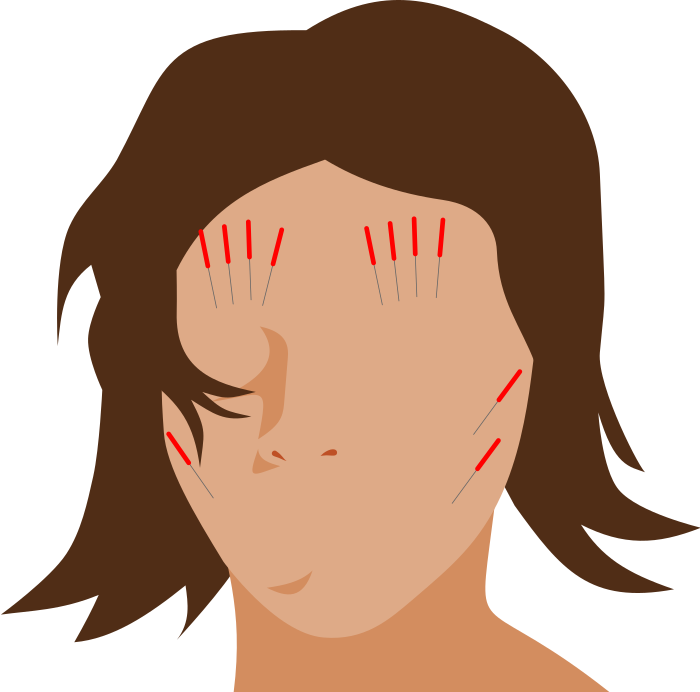

Kosmetische Akupunktur
Tradition neu
angewandt
Die Kosmetische Akupunktur ist eine junge und sehr effektive Behandlungsmethode zur Straffung der mimischen Muskulatur. Feine Nadeln stimulieren Akupunkturpunkte auf Gesicht und Körper.
In der Folge verbessert sich Sauerstoffversorgung und Energiefluss im Hautgewebe, was zu mehr Elastizität und Straffung führt.
Dauer und Preis
Kosmetische Akupunkturca. 60min | 45€
Ein 4er-Paket kostet 160€.
Termin vereinbaren
